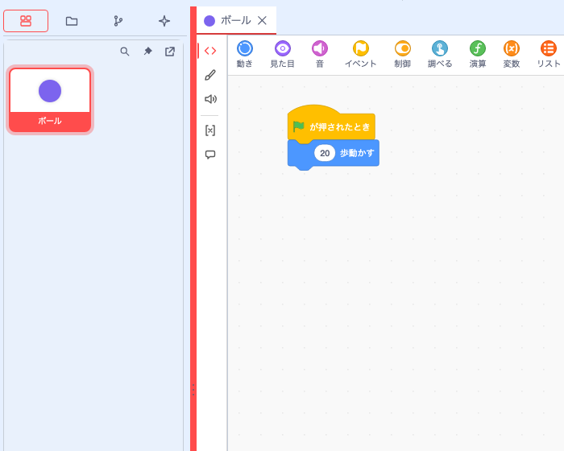

機能ガイド 5/12 · 2026年11月14日更新
作業領域を分割・別画面にする
編集パネルを左右・上下に分割したり、別ウィンドウに移したりして、作業しやすい配置を作れます。配置は作品ごとに記録され、次にその作品を開くと再現されます。
5.1 境界を動かして作業領域を調整する
境界にある3点のグリップをドラッグすると、隣り合う領域の大きさが変わります。Plus標準配置では、左ドロワー（スプライト一覧など）の幅を調整できます。Scratch配置では、コード領域とステージ側の幅、ステージとスプライト一覧の高さを調整できます。

境界にフォーカスを移すと、矢印キーでも調整できます。Enterで初期値に戻ります。Scratch配置で調整した比率はブラウザーに保存されます。URLに twPlusSplitter=0 を付けて開き直すと、この節で扱う境界がなくなります。その場合も、ステージ自体の大きさの調整や編集パネルの分割は使えます。 境界のグリップ
5.2 パネルを左右・上下に分割して並べる
編集パネル右上の「編集パネルのレイアウト」から「パネルを横に分割」または「パネルを縦に分割」を選びます。横に分割すると右側に、縦に分割すると下側に、同じスプライトの編集画面が開きます。

開いているタブを移すには、置きたい領域へドラッグし、配置先の色が変わったところで離します。ドラッグ中はタブのプレビューが表示されます。別のタブ列に落とすと、その列にまとまります。境界をドラッグすると広さを調整でき、分割したパネルは「この分割パネルを閉じる」でまとめて閉じられます。
「タブを垂直に並べて表示」を選ぶと、タブの列がパネルの左側に縦に並びます。タブが多いときや、長いスプライト名を読みやすくしたいときに使います。元に戻すには、同じメニューの「タブを水平に並べて表示」を選びます。
たとえばコードを左、ステージを右に置けます（ステージをタブで表示する）。対応する拡張で開いたYAML文書も、タブとして並べられます。 分割ワークスペースの既定化
5.3 複数のコード画面を並べて見比べる
同じスプライトのコードを二つのペインに表示すると、スクロール位置とズーム倍率を別々に保てます。片方で初期化のコードを見ながら、もう片方でイベントのコードを編集するときに使えます。編集したブロックは両方に反映されます。編集するペインを切り替えるには、そのペインをクリックするか、フォーカスを当ててEnterを押します。
初期化のブロックを表示
ブロックの編集を共有
イベントのブロックを表示
コードの並びの見え方を切り替える
コード領域の空白を右クリックし、「コードの並びの見え方を変更する」から「通常配置の見え方」「Z配置の見え方」「N配置の見え方」を選べます。Z配置は元の配置を上の段から左→右の順に、N配置は左の列から上→下の順にたどり、スクリプトを縦一列に並べて表示します。離れた場所にあるスクリプトを順に読みたいときに使います。選んでいる見え方にはチェックが付きます。ブロックの座標は変わらず、「通常配置の見え方」に戻すと元の位置で編集できます。
ブロックの座標そのものを整理するには、「編集」→「コードブロックの再配置」を選びます。「順序」（例：「Z方式（行順）」）と「方向」（例：「垂直」）を選ぶと、移動後の配置がダイアログ内にプレビューされ、「再配置する」で確定します。手順はBall Demoのチュートリアルでも図付きで説明しています。 コードの並びと再配置 · 背景メニューでの切り替え
開発中 macOS向けDesktop開発版では、同じスプライトをOSの別ウィンドウで開き、コード編集と「取り消し」「やり直し」を共有する動作を検証しています。機能拡張独自の入力欄を別ウィンドウで使う試作は、対応する形式に限って検証しています。 コードペイン · Desktopのコード別窓と検証範囲
5.4 編集パネルを別画面で開く
「編集パネルのレイアウト」から「パネルを別画面で開く」を選ぶと、そのパネルをブラウザーの別ウィンドウで開けます。ディスプレイが2台あるときは、コードと素材の編集を別々の画面に置けます。別画面のパネルは「このパネルを別画面から元に戻す」で元の位置に戻ります。
ブロックパレットだけを別画面にする方法はブロックパレットを別画面で開くで説明しています。
5.5 スプライト一覧を別ウィンドウに移す
Plus標準配置では、起動時から左ドロワーにスプライト一覧が固定表示されています。一覧上部の「アンドック」を押すと、一覧がブラウザーの別ウィンドウに移り、元の場所には「ここに戻す」ボタンが残ります。別ウィンドウでもスプライトの選択・追加・削除ができます。別ウィンドウ右上の「レイアウト変更」から「元の画面に戻す（ドックする）」を選ぶか、元の場所の「ここに戻す」を押すと、左ドロワーに戻ります。ウィンドウの最大化・最小化の項目は、ブラウザーでは選べません。
開発中 macOSのDesktop開発版では、ステージ・スプライト設定・一覧をアプリの別ウィンドウに移して元に戻す操作も確認しています。 一覧を直接別ウィンドウで開く · レイアウト変更メニュー · Desktopへの導入状況
5.6 次に開くときに作業配置を復元する
Plus配置では、タブの順序、ペインの分割と大きさ、選んでいたタブを作品ごとにブラウザーに記録します。作品は、開いた作品フォルダ、開いたSB3ファイル、Desktop版ではファイルの場所で見分け、どれもない場合は作品名で見分けます。同じブラウザーでその作品を開き直すと、読み込んだスプライトや作品内の文書と照合して配置を再現します。記録を読み取れない場合や、作品の内容と照合できない場合は、初期配置で開きます。
| 保存される内容 | 保存先 | 操作 |
|---|---|---|
| タブの順序・分割・選択状態 | 同じブラウザープロファイル内のエディターの保存領域（作品ごと） | 同じエディターで同じ作品を開く |
| ブロックや素材、確定した作品内文書 | 作品のSB3または作品フォルダ | 編集を反映し、ファイルメニューで保存する |
ブラウザーに残るのは、作品ごとの直近の配置です。作品の内容はSB3に保存します。従来の編集レイアウトや文書ダイアログを使うには、作品を保存してから twPlusDockview=0 を指定して開き直します。Desktop開発版で直接開いた外部YAMLファイルのタブは、復元対象から外れます。 再起動後の配置復元 · 作品ごとの配置の再現